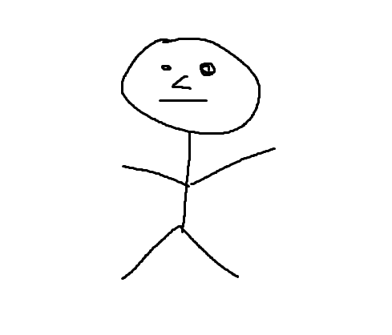

This website is mainly focused archiving some useful links I might need to share for me and my mutuals. Some of these links are just test links for myself aswell.
About me (updated in late May 2025):
Living in Helsinki, Finland.
24 years of age.
MSc (FM) in mathematics, minor in computer science.
Bachelor's student in mechanical engineering (Tekn. yo).
Currently I am waiting to start my mandatory non-military service in septemper. I will be working at Aalto university's department of mathematics and systems analysis.
My mathematical specializaiton lies between topology, geometry, algebra and analysis where my master's thesis is in differential topology.
Some of my interests other include, listening, playing and composing music (guitar is my main instrument), philosophy (especially philosophy of mathematics), culture, breathing air etc. I also used to like camping and hiking (I was a scout for many years).
I used to also play alot of video games (on pc) during my teens and childhood (i.e. chronically online).
My favorite music genres are mostly guitar based with (prog) rock, (gypsy) jazz (fusion), blues or metal, but I also enjoy edm like trance or gabber (I like going to forest parties).
Many typos here because of dyslexia
tg: kalle0001
ig: kalleheinonen_

Picture of me.Esoteric picture from Spivak's differential geometry book for mystery.
Links: